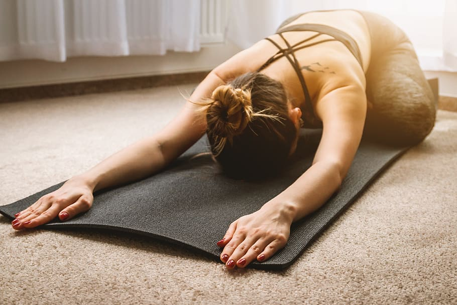

Estiraments
Aquí us deixo un seguit d'estirament que us ajudarà a escalfar i prevenir lesions muculars abans de tocar.
Començarem pel coll, on normalment trobem moltes lesions musculars. Abaixarem cap als braços , les mans i els canells. Finalment acabarem estirant l'esquena.
Primer de tot cal saber que cal estirar d’una manera determinada. Si no ho fem així, els estiraments no serviran de res. Per tant cal tenir en compte les següents indicacions:
-No hem de fer rebots a l'estirar, és a dir que a l'estirar un múscul l’estirament ha de ser relaxat i gradual de mica en mica sense rebotar.
-No hem de sentir dolor a l'estirar, per tant si notem dolor vol dir que estem estirant el múscul més del compte. És molt important no passar-se estirant, ja que es poden ocasionar contractures.
-Hem de respirar mentre es fa l’estirament per tal d’oxigenar-nos bé.
-Cada estirament haurà de durar 20 segons aproximadament, és a dir si tenim un mateix estirament per als dos braços seran 20 segons per cada braç.
Estirarem els deltoides, de peu o asseguts estirem lateralment el coll inclinant el cap cap al costat ajudant-nos de la mà. Notarem com els músculs es tensen.
Estirarem el trapezi. En aquest exercici és preferible estar a peu dret, tot i que podem fer-lo asseguts. Tracta de girar el coll i mirar en diagonal en sentit oposat a l’espatlla tot ajudant-nos amb la mà estirant molt lleugerament. Hem de vigilar l’espatlla que no utilitzem que no pugui cap a dalt.
Estirarem la musculatura de tots els costats del coll, fent simples rotacions, però efectives. Es tractarà de fer el gest «no» amb el cap quedant-nos quiets als costats.
Després farem el mateix amb el gest del «sí», aquí deixarem anar tot el pes del cap quan tinguem la barbeta enganxada al pit.
En aquest estirament estirarem els tríceps braquials uns extensors dels colzes i les espatlles.
Passarem la mà per darrere l’esquena i deixarem la musculatura tan relaxada com sigui possible, fent una mica de força com si volguéssim abaixar el braç. Ens ajudarem de la mà que ens queda lliure posant-la sobre el colze i fent força perquè el braç no pugui baixar, notarem com la musculatura es tensa.
En aquest estirament farem les típiques rotacions d’espatlles que relaxen la musculatura que les envolta. Aquests estiraments ens serviran per començar a escalfar el múscul i a activar la mobilitat.
Aquest estirament és un estirament global per les espatlles i els braços. Es tracta d’estirar els braços darrere l’esquena tenint les mans juntes amb els palmells mirant a l’esquena.
El primer consisteix a estirar el braç i aixecar la mà i estirar-la cap enrere, el palmell de la mà estarà al davant.
Al segon la mà també mirarà endavant però els dits apuntaran cap a terra.
Al tercer, també estirarem el braç però el palmell ens mirarà a nosaltres i els dits també apuntaran cap a terra.
En aquest estirament estirarem els dits molt lleugerament cap amunt.
Aquest estirament consisteix a girar els canells fent rodones amb ells.

Un estirament de ioga que és molt útil per estirar l’esquena és la postura del nen. Es relaxen els músculs de la part baixa de l’esquena i la columna vertebral.
Un altre estirament bastant comú és la postura del gat. Consisteix a ficar-se a la postura de quatre grapes i arquejar l’esquena. Quan arquege'm l’esquena cap a dalt, hem de posar el cap cap a dins i quan arquege'm cap a baix hem de mirar endavant amb el cap. L'arqueig es farà traient cap a fora o cap a dins la pelvis. Vulgarment dit: traient o ficant cul.